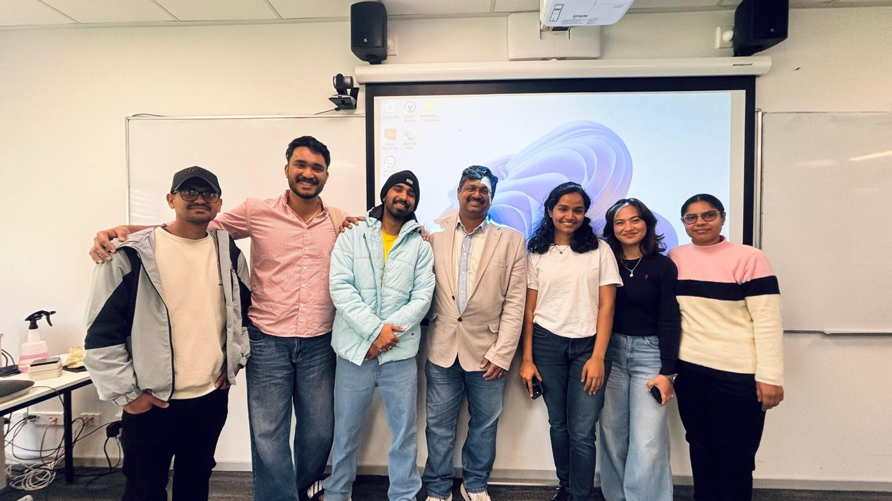
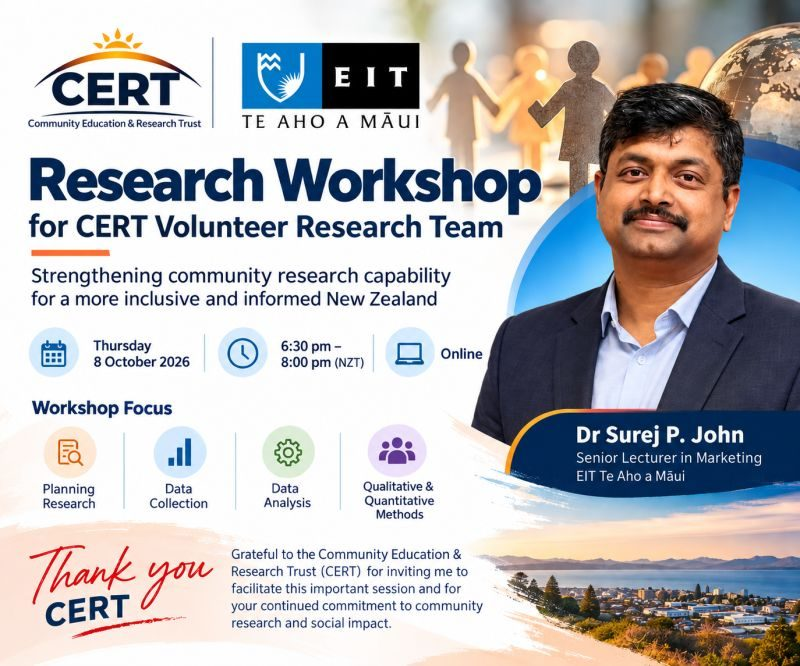

Consulting & speaking
I help organisations make marketing decisions based on evidence, drawing on my published research and on survey and data analysis to answer practical questions about customers, channels and experience.
Areas of expertise
Social media & influencer strategy
Choosing channels and influencers, measuring engagement, and what research says works for tourism, retail and education brands.
Customer experience & value co-creation
Designing experiences with customers, using technology and AI well, and recovering when service goes wrong.
Marketing for education providers
Student satisfaction, relationship marketing and digital recruitment for tertiary and private training providers.
Customer research & analytics
Survey design, structural equation modelling and clear reporting that managers can act on.
Ways to work together
Available for workshops, keynotes and guest lectures, applied research projects, customer surveys and analysis, and research methods training.
Talks & keynotes
Conference sessions, industry events and guest lectures on digital marketing and customer experience.
Workshops & training
Hands-on sessions for marketing teams, or methods training in SPSS, AMOS and NVivo for researchers.
Applied research
Customer and stakeholder studies, from survey design to analysis and recommendations.
Recent talks and workshops
- 8 Oct 2026
Research Workshop for the CERT Volunteer Research Team
An online workshop for the Community Education & Research Trust (CERT) on planning research, data collection, data analysis, and qualitative and quantitative methods, to strengthen community research capability in New Zealand.

- 9 Sep 2026
E-Commerce in the AI Era: Trends, Marketing & Consumer Behaviour
International guest lecture for MBA students, hosted by Amity Business School and the Centre for International Affairs, Amity University Chhattisgarh, Raipur, India. Read the letter of appreciation.
Have a project or event in mind?
Tell me what you need and when, and we can discuss the best format.